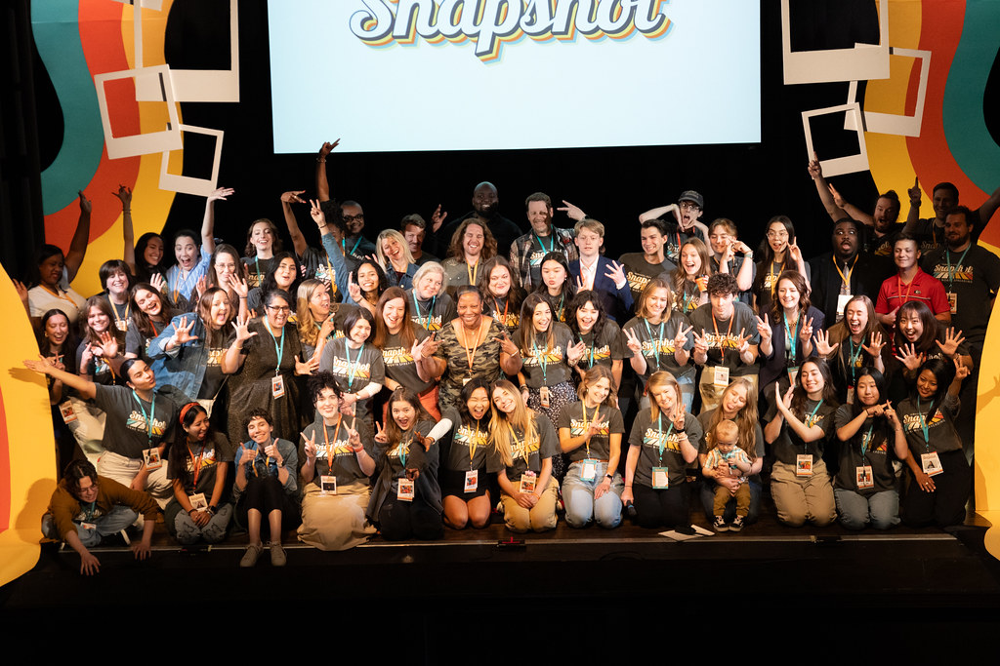
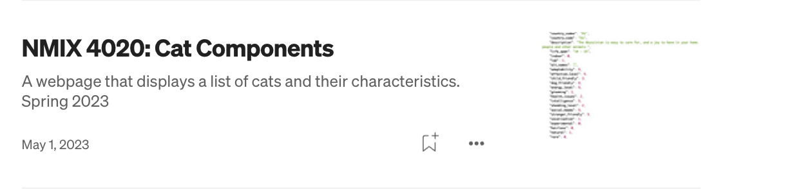
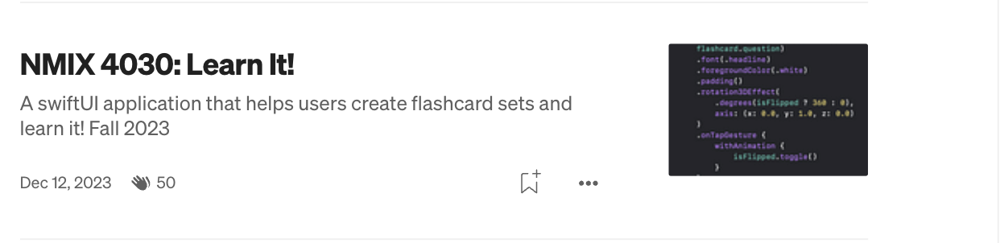

Catherine's New Media Certificate Journey
New Media Certificate Summary
As a computer science major, my coursework has focused primarily on building a strong foundational understanding of the
mathematical principles and theoretical concepts behind coding. While this provided me with a solid academic base, it
didn't involve as much hands-on coding. However, through the New Media Certificate program, I was able to bridge this
gap and apply my foundational knowledge to practical projects in front-end development, including web development and iOS app creation.
Beyond technical skills, the certificate also offered classes like New Media Industries and TEDxUGA, which helped me develop professional
skills such as teamwork and effective communication—key components of a successful career. At the end of the certificate journey, I had the
opportunity to integrate everything I had learned in the New Media Capstone course. In this course, I worked with an incredible development
team to create an iOS app for the iPad using Apple's development tools.
This journey through the New Media Certificate not only strengthened my technical abilities but also allowed me to immerse myself more deeply in
technology, blending both creativity and technical expertise.
Projects
- NMIX 4020: Advanced Web Development Click here to read more 
- NMIX 4030: Native App Development Click here to read more 
- NMIX 4210: New Media Industries
- NMIX 4012: TEDxUGA